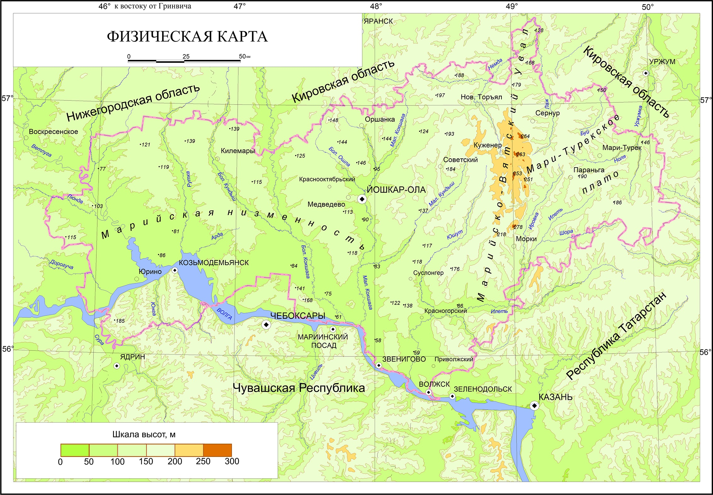
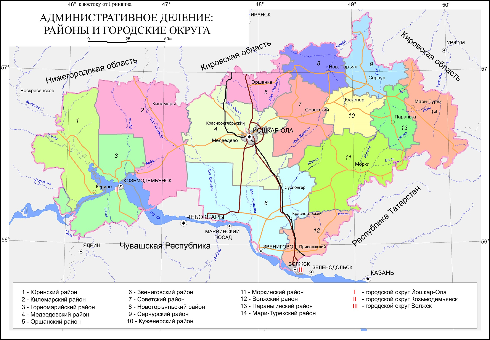

spis treści › mari el
Poniżej dwie mapy Republiki Mari El.

mapa hipsometryczna mari el [źródło: гео12.рф/atlas/1-административно-территориальное-ус]

mapa administracyjna mari el [źródło: гео12.рф/atlas/1-административно-территориальное-ус]
Mari El leży w strefie czasu moskiewskiego (UTC+03:00). Zegar pokazuje aktualny czas.